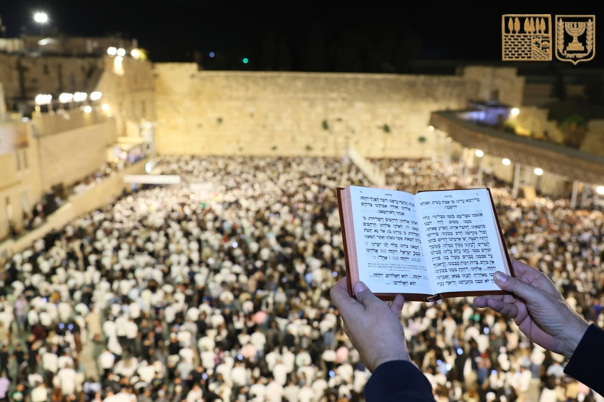

מופעי הסליחות 🕯️
סיורים, תפילות ליליות והופעות פיוט ברחבי העיר העתיקה.
לפרטים נוספים →
מנהג מרגש שמושך אלפים לכותל המערבי. כולל מופעים אמנותיים, וסיורים המתקיימים בעיקר בשכונות נחלאות והעיר העתיקה.
- מוקד עיקרי: הכותל המערבי
- תקופה בשנה: סוף הקיץ / תחילת הסתיו (חודש אלול)
- דגש: חוויה לילית, מומלץ להגיע מוקדם.